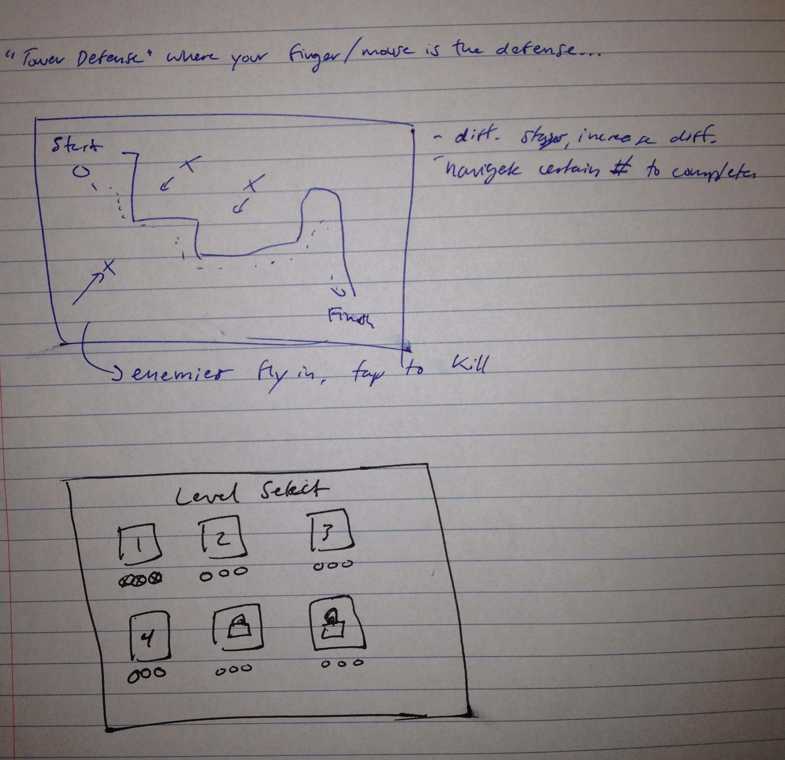

Finger of God / Touch Defense (title TBD)
High Concept
Touch Defense is a twist on the tower defense game genre -- instead of building towers to defend your units, players will use their "finger of god" to tap and protect their units from enemies.
Genre
Tower Defense (with finger taps replacing towers)
Platform
We will be developing this game for mobile only.
Story
We are still determining the story of the game but will most likely leave it abstract.
Aesthetics
We are considering either a medieval theme or a totally abstract theme similar to Geometry Wars. We do know that we do NOT want to use pixel art again.
Gameplay
Mechanics
The player taps the screen to defeat enemies and prevent them from killing their units:
- player units and enemies follow a given path
- paths can differ in length and shape
- enemies can be slower or faster, have more or less health
- possible power ups to help the player clear the screen
Control
- touch
- accelerometer (maybe)
Onboarding
We plan to teach the player one or two mechanics at a time in order to let the player get used to the controls and what they can do.
Player Learning
The player will need to learn how to tap the screen to kill enemies and possibly how to use power-ups effectively.
Screenshots

Other
We will be using the Phaser game library to create the game.
About the developers
Chad Karon is a third-year game design and development student who specializes in programming.
Derrick Hunt is a fourth-year game design and development student who enjoys UI design, asset creation and game programming.